A playable, Game Boy-styled portfolio with a custom 3D avatar, an After Effects promo, a retrieval-augmented chatbot and a contact system.
The goal was a modern, interactive 3D portfolio that presents my profile, skills, projects and achievements as a game developer. Because I make games, the portfolio is itself a small game. Visitors land on a 3D island and walk my avatar between stations, each of which opens a part of the portfolio. Visitors who prefer a normal page can switch to a classic scrolling site with the same content.
The project covers six modules:
Several extra-credit features were added on top of these.
| Layer | Technology |
|---|---|
| Frontend | React 18, Vite 5, three.js, @react-three/fiber, @react-three/drei, hand-written CSS (4-colour Game Boy palette) |
| Backend | Node.js 20, Express, Zod validation, helmet, express-rate-limit, Nodemailer |
| RAG | Google Gemini embeddings (gemini-embedding-001, 768 dimensions) and chat model, JSON vector index, in-memory cosine search |
| Content creation | Blender (avatar and models, Draco-compressed GLB), Adobe After Effects (promo), Python scripts for the music, sound effects and text images |
| Hosting | Vercel: static site plus the Express API as one serverless function on the same domain |
Browser ──────────────► Vercel CDN: index.html, JS chunks, GLB, videos, audio
│
└── /api/chat, /api/contact ──► api/index.js (Express app from backend/src/app.js)
├── chat: embed question → top-k search in rag/index.json
│ → Gemini answers from those chunks only (streamed)
└── contact: Zod validation, honeypot, rate limit → Gmail SMTP
All content (games, models, education, links) lives in one file, src/data.js, and both views read from it. The chatbot reads data/profile.md. Secrets live only in environment variables, never in the code or the repository.
A low-poly island built with React Three Fiber. The player character is my avatar, controlled with WASD or arrow keys (Shift to run, Space to jump), or with a touch joystick on phones. Stations around the island open full panels with the portfolio content:
The game also has:
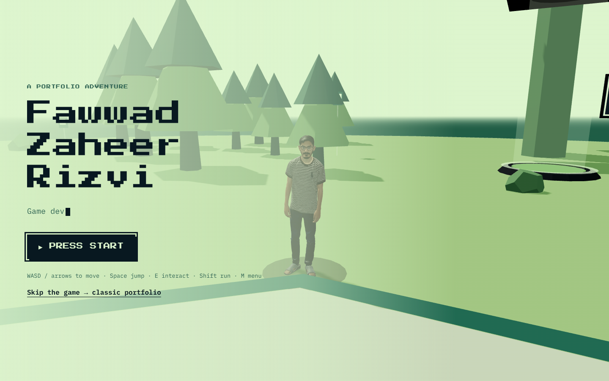
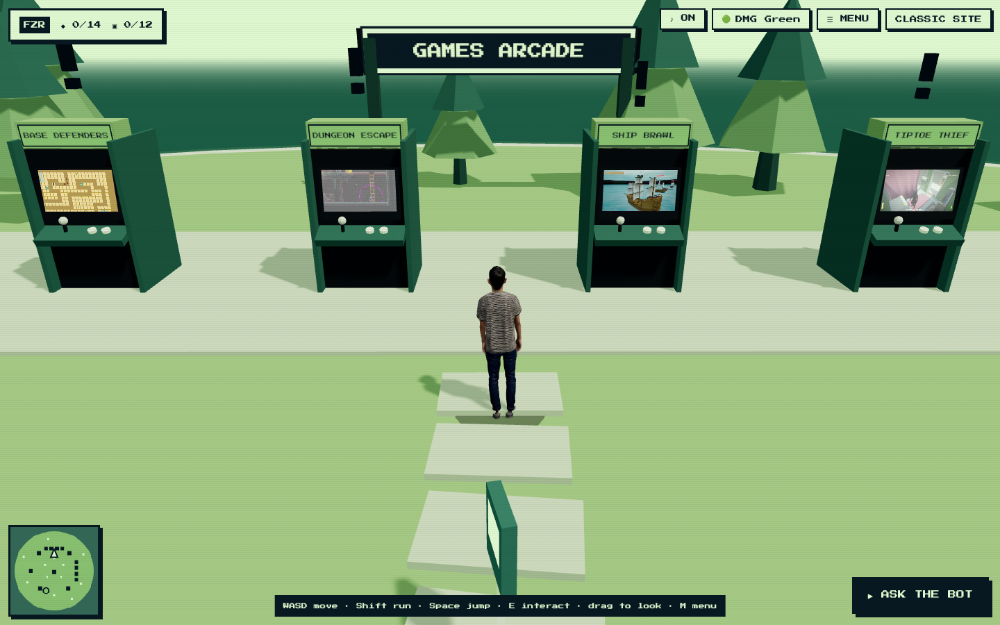
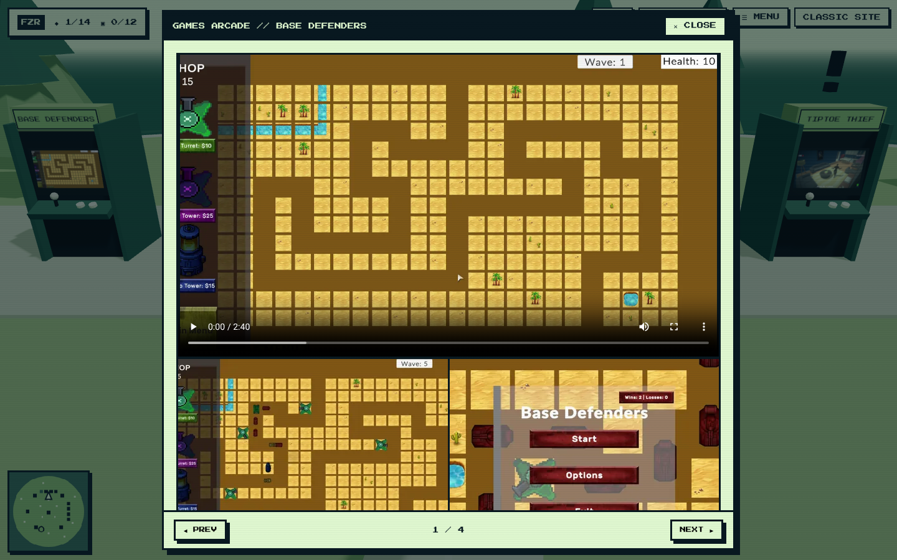
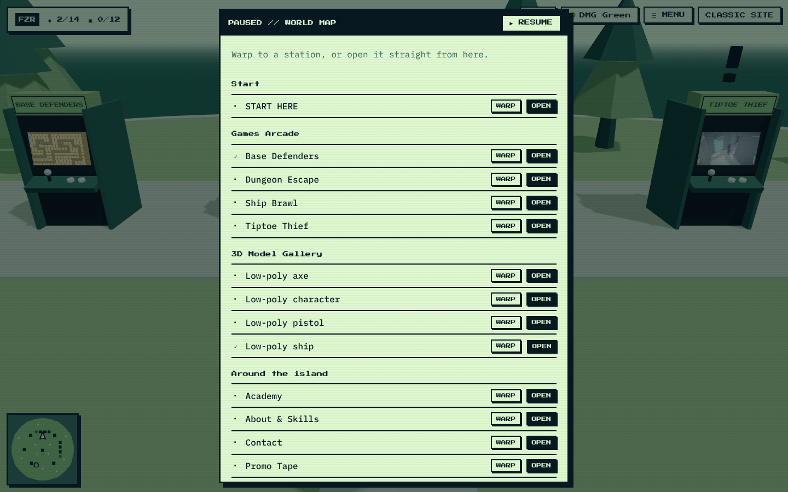
A responsive scrolling site with these sections:
It has a sticky header that highlights the current section, numbered section headings, fade-in on scroll (disabled when the visitor asks for reduced motion) and a mobile layout.
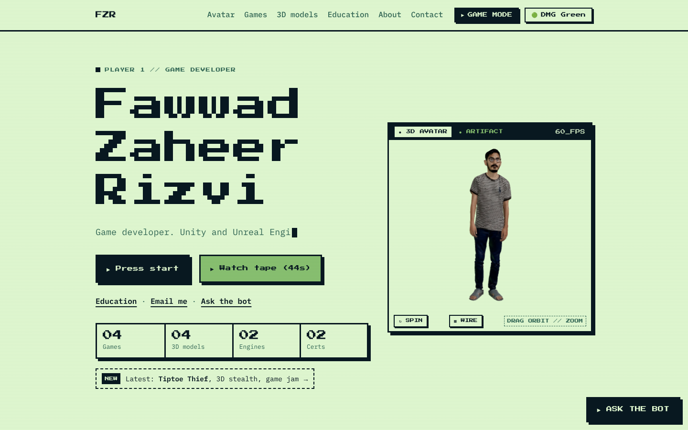
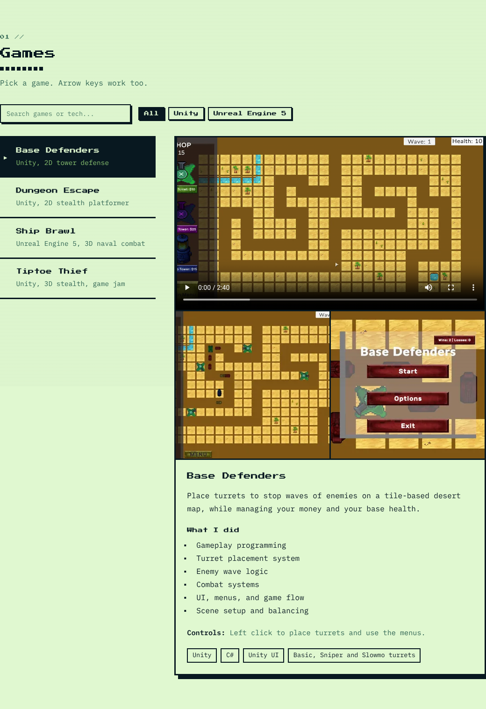
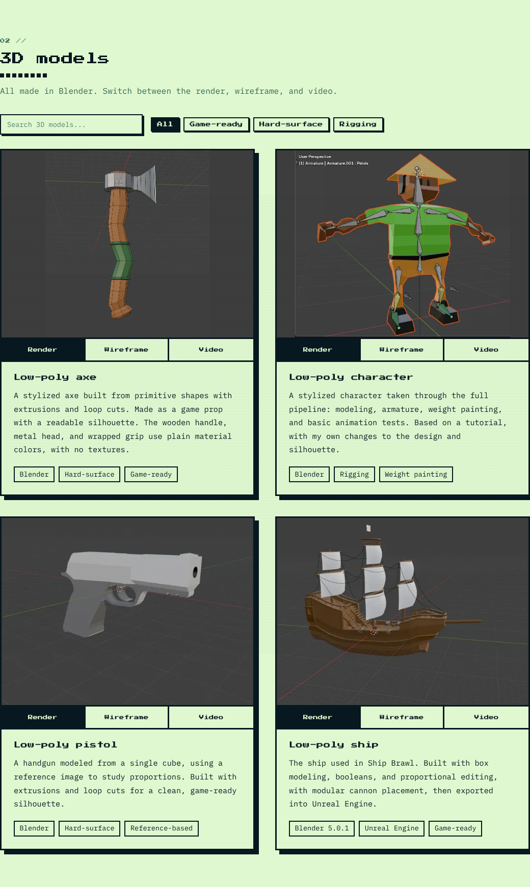
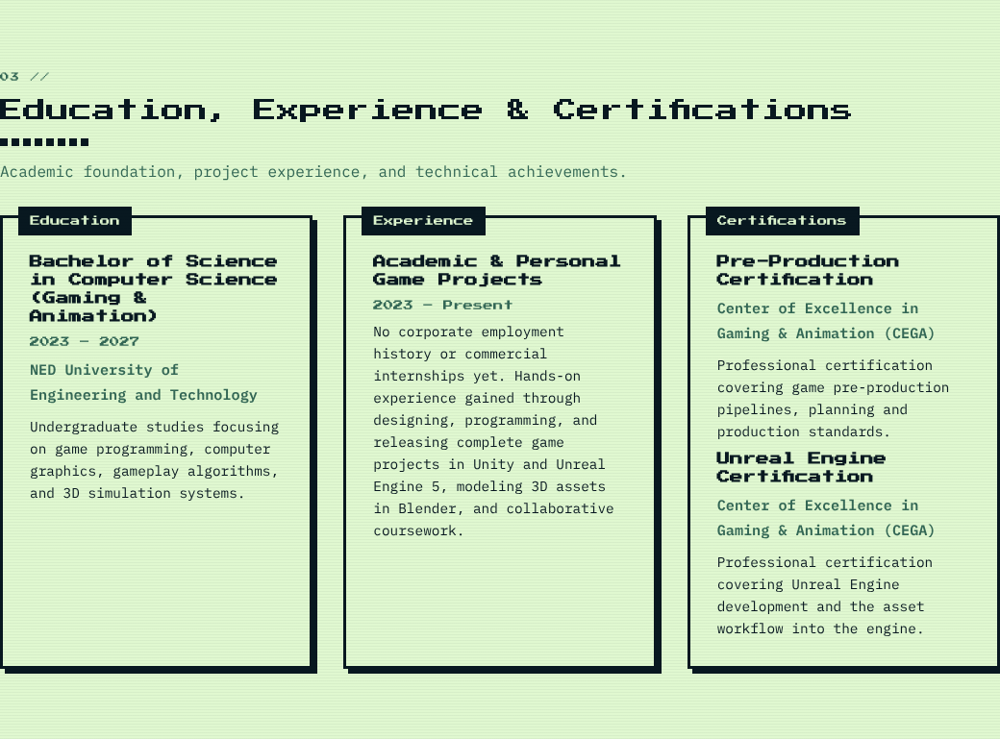
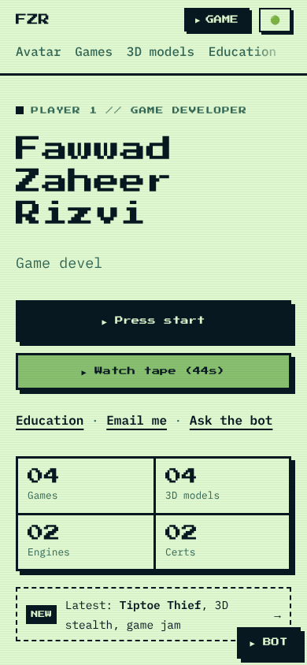
The avatar is a textured 3D model of me. It was generated from my photos with an AI image-to-3D tool and then prepared in Blender, where it was scaled, oriented and exported. Check this sentence and describe your own Blender work accurately. Deliverables are the Blender file (public/models/avatar.blend) and the web model (public/models/avatar.glb).
Optimisation: the web model keeps its Draco-compressed geometry (about 40,000 vertices and 69,000 triangles). Its texture was re-encoded from a 2048 px PNG to a 1024 px JPEG, which cut the file from 4.5 MB to 460 KB with no visible difference at the size it is shown. The full-size original is kept in assets-source/.
In the website: the hero viewer lets visitors orbit, zoom, pause the turntable spin and switch to wireframe. The viewer stops rendering when it is scrolled off screen. In game mode the same model is the player character. It has no skeleton, so walking, running, jumping and landing are animated in code: stride bob, body sway, lean and squash-and-stretch.
A 44-second, 1920×1080, 30 fps promo in the style of a retro game: boot screen, "Stage" title cards for each game, a bonus stage for the Blender models, a character sheet with skills and certifications, and a "Ready for Player 2?" outro with contact details.
How it was made: the After Effects project is built by an ExtendScript (tools/promo/ae/build_promo_ae.jsx) that creates the compositions, layers, keyframes, transitions and effects (glitch bands, CRT scanlines, vignette) from my gameplay and model footage. I then rendered it in After Effects through Media Encoder (H.264 + AAC).
Music: the soundtrack is an original chiptune generated by a script, so there are no licensing issues.
Files:
after-effects/: the .aep project and the full-quality renderpublic/video/promo.mp4: a 9.5 MB copy of the same render for the websiteVisitors can watch it from the home section or on the island's TV.
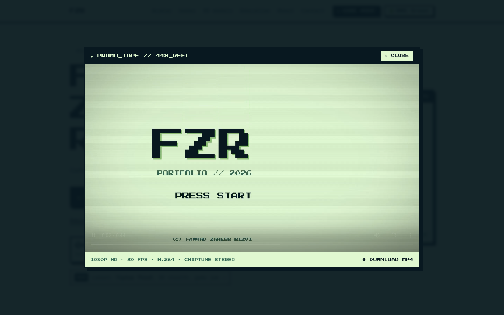
FZR-BOT answers questions about me using only the facts in data/profile.md.
| Step | Implementation |
|---|---|
| Load and clean | rag/ingest.js reads data/*.md and removes placeholders and notes |
| Chunk | Split by heading, so each project, model or skill group is one chunk. Long sections are split at 900 characters with a 150-character overlap. |
| Embed and store | Gemini gemini-embedding-001, 768 dimensions, normalised vectors, saved in rag/index.json |
| Retrieve | Embed the question, cosine similarity, top 4 chunks above a minimum score |
| Generate | A strict system prompt plus the retrieved chunks. The answer is streamed to the browser as server-sent events. |
| Cite | Each answer shows source chips that link to the matching section of the site |
Preventing made-up answers:
Abuse limits: questions are capped at 500 characters and history at 6 turns, and each IP gets 15 requests per minute.
Chat interface: message history, a typing indicator, error messages, suggested questions, and keyboard and screen-reader support.
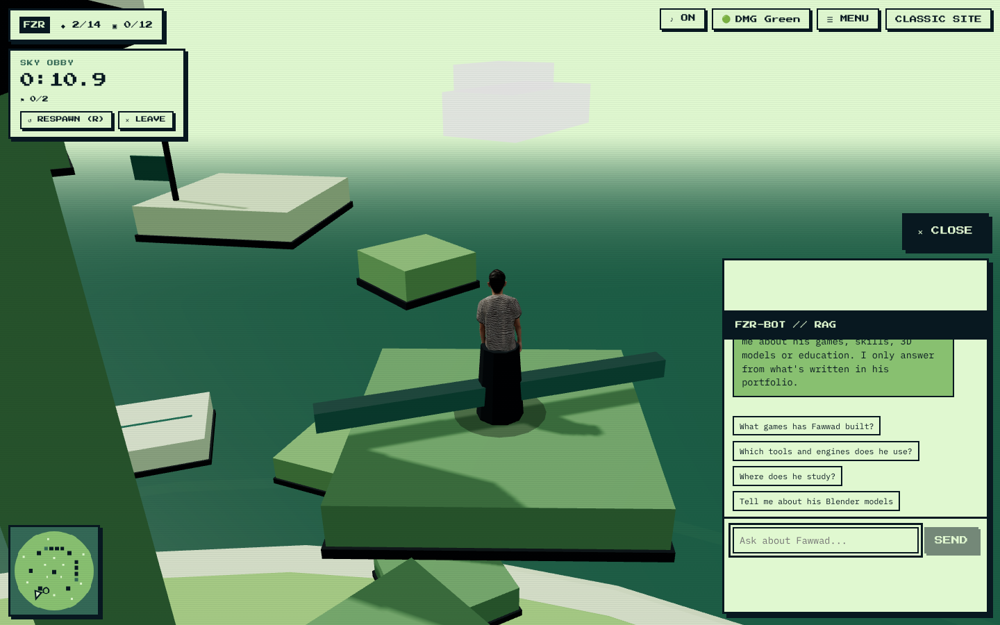
src/contactRules.js) and the same rules on the server with Zod.backend/.env.example documents them.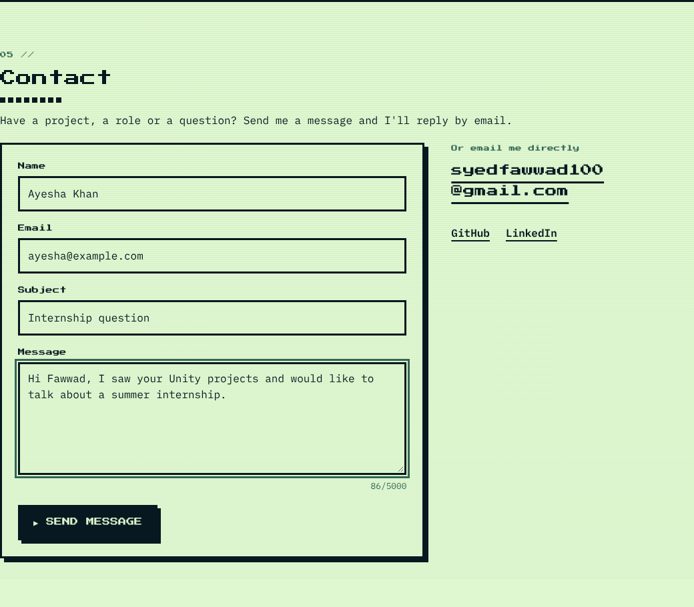
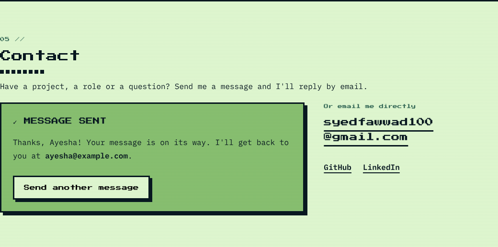
The site and the API are deployed together on Vercel from the public GitHub repository:
dist/.vercel.json sends every /api/* request to api/index.js. That file runs the same Express app used locally (backend/src/app.js), so there is one codebase for development and production.CLIENT_ORIGINS. Requests from any other site are refused./api/health reports whether the chatbot and email are configured.The README covers the overview, features, stack, folder structure, local setup, environment variables and deployment steps.
| Feature | Implementation |
|---|---|
| Dark/light theme | Three palettes (DMG Green, Pocket Mono, CRT Night). The 3D world recolours live and the choice is remembered. |
| Mouse-reactive 3D | The hero avatar and the crystal "artifact" react to the pointer. Drag-to-orbit camera in game mode. |
| Chatbot citations | Source chips link to site sections, or open the matching station in game mode. |
| Filtering and search | Games by engine, models by tag, with text search. |
| Accessibility | Semantic HTML, ARIA, full keyboard play, skip link, focus styles, reduced-motion support, WebGL fallback. Lighthouse accessibility 100. |
| Beyond the list | Game audio engine, collectibles, fast travel, playable and downloadable builds, and the Sky Obby: a 19-platform course with moving, crumbling and blinking platforms, a spinning bar, checkpoints, a timer, a saved best time and a prize. |
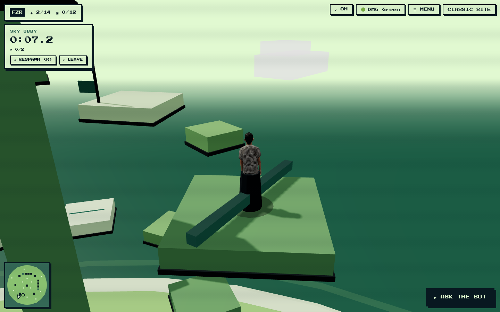
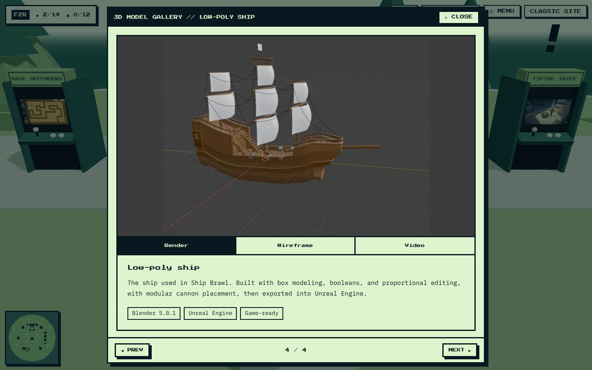
cd backend && npm test).| Problem | Solution |
|---|---|
| Videos played without sound in one browser | The VS Code built-in browser has no AAC decoder. Real browsers were fine. A "Sound check" panel now shows which formats the browser supports. |
| Game music clashed with videos | Rebuilt the audio on plain media elements with one rule: game audio pauses while any video plays. |
| Flickering, shiny ground | Two coplanar ground layers (z-fighting) plus shadow acne. Fixed by separating the layers, using matte materials, adding a shadow normal bias and moving the camera's near plane. |
| Promo text misaligned in After Effects | Text layer metrics differed between After Effects versions. The final version renders text as images, which line up exactly. |
| Glitch effects running for the whole video | In After Effects, setting a layer's in-point resets its out-point. The script now sets the in-point first. |
| Chatbot error 500 | The API server wasn't running. Added a health check and clearer messages. |
| Email Reply-To injection risk | Pass addresses as structured objects instead of text, with a regression test. |
The project delivers all six modules: a portfolio that works as a playable 3D game and as a fast, accessible classic site, my avatar, an After Effects promo, a grounded chatbot that cites its sources, and a hardened contact system, all deployed from one repository. Building the portfolio as a game shows the same skills it describes: gameplay programming, 3D assets and polish.
| Module | Screenshot | File |
|---|---|---|
| 1 | Classic home, games, models, education, about, mobile | docs/screenshots/01–05, 09 |
| 1 | Game title, island, arcade, panels, menu | 10–15 |
| 2 | Avatar in the hero viewer and as the player | 01, 11 |
| 3 | Promo in the video player | 08 |
| 4 | Chat panel; live answer with sources | 17 + yours |
| 5 | Form, success message; received email | 06, 07 + yours |
| 6 | Vercel deployment page, live URL | yours |
| Extra | Sky Obby, model gallery | 16, 14 |
tools/.